Aliança Verde Amazônia

Bioeconomia · Restauração · Impacto
Convertendo passivo ambiental em ativo produtivo.
Com raiz, retorno e resultado.
A Aliança Verde não nasce de promessas fáceis. Nasce de uma constatação objetiva.
Há milhões de hectares no Brasil com potencial produtivo represado por passivo ambiental, por falta de planejamento ou por ausência de capital e operação técnica. Atuamos exatamente nesse ponto de ruptura. Com expertise em engenharia florestal, direito agrário e mercados de impacto, estruturamos parcerias fundiárias de longo prazo que convertem áreas ociosas em ativos produtivos regularizados.
Nossa operação é técnica, mensurável e comprometida com prazos. Cada propriedade recebe um plano personalizado, executado por equipe especializada, com acompanhamento contínuo e prestação de contas transparente. Somos parceiros de construção — não de projetos de impacto sem lastro. Cada talhão implantado e cada crédito de carbono certificado é resultado de trabalho estruturado, planejado e comprometido com o longo prazo.
É assim que a terra produz — com raiz, retorno e resultado.
Do Passivo Ambiental
à Bioeconomia Integrada
O Contexto
- Extensas pastagens degradadas no Brasil bloqueiam crédito rural e desvalorizam propriedades por ausência de regularização ambiental.
- Comunidades indígenas detentoras de floresta preservada raramente contam com estrutura para monetizá-la de forma legítima e sustentável.
- Restauração convencional foca apenas no plantio — sem processamento e acesso a mercados, a floresta restaurada não gera retorno ao proprietário.
- Sem alternativa econômica viável, o desmatamento permanece racionalmente atrativo para famílias sem outra opção de renda.
Nossa Abordagem
- AVA assume integralmente o CAPEX e o risco operacional — parceiros contribuem com o território e recebem participação direta na receita.
- Cada propriedade recebe planejamento silvicultural personalizado, regularização ambiental completa e acesso estruturado a mercados.
- Integração vertical — da floresta ao processamento agroindustrial — retém a margem dentro do projeto e gera retorno real ao parceiro.
- Regularização via CAR e PRA converte passivo em ativo produtivo, sem custo algum ao proprietário ou à comunidade.
Bioeconomia Integrada
de Longo Prazo
Sequestro real e incremental. Certificação Verra VCS+CCB VM0047 v1.1, aprovada pelo ICVCM como CCP-eligible. Estabiliza o fluxo de caixa durante a carência, antes da maturação dos pilares agrícolas.
Zona três. Polpa congelada e pó liofilizado de alto valor. Fábrica própria retém integralmente a margem industrial. Receita crescente com a maturação do sistema agroflorestal.
Zona quatro. Líquor single origin orgânico Amazônia. Processamento próprio retém a margem industrial. Receita escalonada com a maturação do plantio clonal.
Zona dois. Certificação FSC. Três ciclos complementares: Paricá (curto), Freijó (médio) e Guanandi (longo). O sistema de rodízio garante cobertura florestal contínua e fluxo de caixa perpétuo ao longo de toda a vida do projeto.
Zona cinco. Espécies madeireiras nativas em densidades reduzidas, integradas a pastagens ativas. Floresta e pecuária coexistindo em escala real. Renda adicional sem interromper a atividade agropecuária do parceiro.
Dois Eixos. Uma Arquitetura.
Rio Branco – Tarauacá
Propriedades com passivo ambiental e logística rodoviária (BR-364). A AVA regulariza a propriedade perante CAR e PRA, convertendo passivo em ativo produtivo. O IMAC permite recomposição de Reserva Legal via SAFs e manejo em rodízio — transformando a área de RL em fonte de renda legalizada. Onde há pasto ativo, a integração silvipastoril mantém a pecuária enquanto introduz o componente madeireiro.
e Ribeirinhas · Calha dos Rios
Territórios com logística predominantemente fluvial. Recuperação de áreas degradadas dentro dos territórios — pastos abandonados pré-demarcação, lavouras antigas — combinada com a valorização da floresta preservada já existente. Total autonomia territorial: a AVA entra com o CAPEX, infraestrutura, acesso a mercados e capacitação técnica continuada.
Floresta como Ativo.
Comunidades como Parceiras.
Executado por quem
já fez no território
Agenda 2030 · NDC Brasil · SBCE · EUDR
Próximos Passos
Construindo floresta
com raiz
A base territorial está consolidada. As parcerias com comunidades indígenas estão formalizadas. A constituição da SPE e a estrutura de garantia estão em finalização. O pacote de diligência completo — modelo financeiro bottom-up, documentação FPIC, protocolos silviculturais e detalhamento de CAPEX por zona — está disponível para parceiros institucionais.
Frans Pagnier
Aliança Verde Amazônia
Derek Gallo
Finanças Sustentáveis & Bioeconomia
BNDES Fundo Clima
Após constituição da SPE